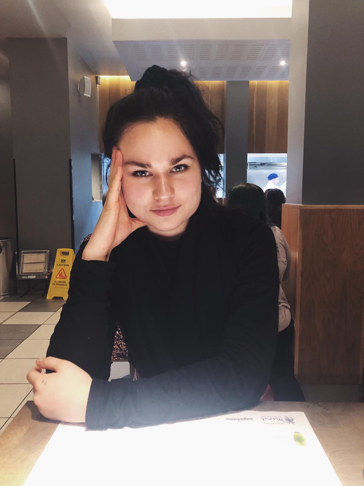

I got into my last year in school and I knew I wanted to go to University.
I went through a stressful week of changing my course four times. I was juggling
between Law and Medicine, and for these courses there were a lot of pre-university
exams and experience I needed that I didn’t have.
With Chemistry, I have always enjoyed it in school and it was one of my strongest
subjects. My dad always told me to do something I enjoy and this piece of advice
really sticks by me till today. I have waves when dealing with stress,
I feel like it is something that comes and goes.
I try to not live in the future, I get little things done day by day, for example
I was looking forward to being productive today. I’m lucky in Chemistry because the
female/male ratio is equal. Out of my friends at home, only one does a STEM subject.
My other friends are studious, especially my medic friends.
I take inspiration of confident and determined individuals - I believe
it’s a good trait to have. For example, one of my favourite inspirations is Anna Wintour.
The summer before University was one my happiest times yet. In New York City,
I went to the museum of modern art and enjoyed an iced matcha. Afterwards, I
picked up a cheesecake walked around the streets. I have a lot of other happy
moments such as being with my friends.